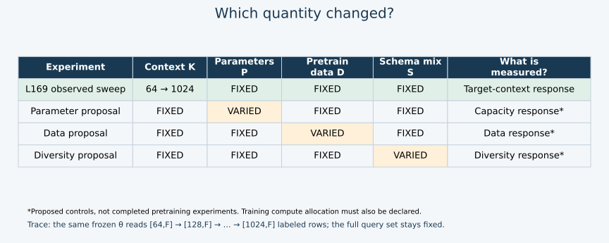
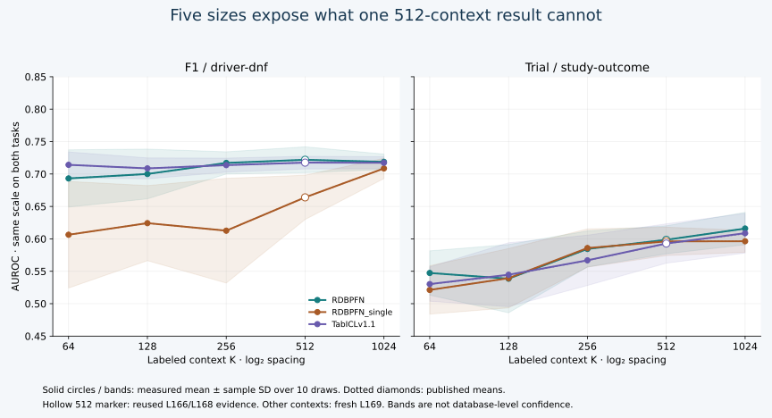
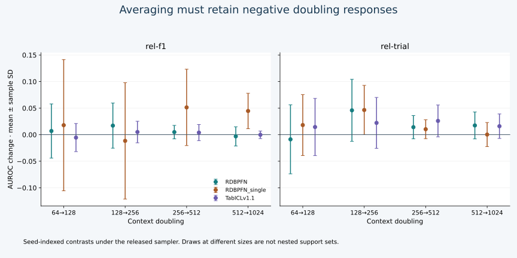

Year 5 · Quarter 1 · Lesson 169
Scaling laws & open questions
The skill: decide what a scaling curve actually supports, then turn its missing evidence into a testable research question.
Reading route. Identify the axis being changed, work through the doubling example, then inspect the measured curves. Finish by choosing one unanswered question for the gap template. Use a separate session for the complete notebook replay and written defense.
Lesson 168 added a second database at a fixed budget of 512 labeled examples. It left a different question unanswered: what changes when the model can read more labeled context? This lesson completes that axis before asking what we still do not know about pretraining scale. That distinction protects the mission: evidence for useful relational models must survive a skeptical comparison.
Prerequisites, restated: a support set is the labeled training examples supplied to an in-context predictor; a query is an example whose target must be predicted. Frozen weights means no optimizer updates on the target task. A checkpoint is a saved set of model parameters. DFS (Deep Feature Synthesis) builds a flat feature matrix from related tables using aggregations. A seed fixes a reproducible support draw; ten seeds are ten draws on the same database, not ten new databases.
1 · “Bigger” has several meanings¶
The 2025 RDL survey, §5.2 argues for models that combine reusable relational structure, heterogeneous attributes and temporal reasoning. It motivates a research direction; it does not give a fitted relational scaling law. We use it as historical framing and the version-pinned RDB-PFN v5 experiment as measurable evidence.
| Axis increased | What changes | What must be controlled to isolate it? |
|---|---|---|
| Inference context K | Labeled target examples read by a frozen predictor | Checkpoint, task, feature pipeline, test queries, support sampler |
| Parameter count P | Number of learned model coefficients | Training data, optimization and evaluation; declare compute allocation |
| Pretraining data D | Training examples consumed before target inference | Model capacity, data mix, duplicates, training budget and stopping rule |
| Schema diversity S | Variety of table/link structures during pretraining | Total rows/tokens, domain mix, schema definition and target exposure |
| Compute C | Operations or resource budget spent | Hardware/precision for timings; architecture and data allocation for learning |
Rows are not independent units of schema diversity: copying one database a hundred times changes row count without adding a new schema. Parameters, data and compute also interact; holding training compute fixed answers a different question from training every model to convergence. Define the estimand—the quantity your comparison is intended to measure—before choosing the sweep.


Worked trace. Imagine weights θ with 700,000 coefficients and a fixed query matrix. At K=64, the predictor reads 64 feature rows and their labels. At K=128, it reads 128. θ is identical in both calls. We have changed target-time information and computation, not the number of pretrained parameters or pretraining examples. The number here is illustrative; the experiment loads and hashes the released weights.
2 · A response curve is not yet a scaling law¶
In plain terms. A curve records what happened at the sizes we tried. A proposed scaling law goes further: it predicts how the outcome should change with size. Testing that prediction at sizes left out of fitting is part of the evidence it needs.
A response curve plots a measured outcome against an intervention. A scaling law is a proposed quantitative relationship that remains useful across a declared range. A common illustrative form is L(x) = L∞ + A·x^(−α): L is a loss, x a positive scale variable, L∞ an assumed limiting loss, A a positive amplitude and α a positive exponent. Doubling x multiplies the excess loss L−L∞ by 2^(−α). If α=1/2, an excess loss of .10 becomes about .0707. This is arithmetic under an assumed model, not a fitted law for relational databases.
Why not fit that equation to any five points? The estimated slope depends on the assumed floor; a different floor can change the exponent substantially. Five noisy points over a short range can fit several functional forms. A defensible law needs a named metric, controlled axes, uncertainty, checks against alternative fits, and predictions checked on held-out scales and tasks. An extrapolation predicts outside the observed range; a smooth line inside a chart does not validate it.
Our metric is AUROC, the probability that a random positive gets a higher score than a random negative, giving ties half credit. Higher is better. AUROC measures ranking rather than calibrated probabilities. We report AUROC directly; substituting 1−AUROC for a training loss would add an untested modeling assumption. We do not fit or claim a pretraining exponent here.
3 · The complete selected reproduction¶
RDB-PFN v5 Appendix A.3 and Tables 6–10 evaluate contexts 64, 128, 256, 512, 1024 over ten support seeds. We select two tasks and three released models while retaining every size, seed and test query within that selection.
- F1 / driver-dnf: 11,411 training candidates; 702 test queries; 72 released DFS features.
- Trial / study-outcome: 11,994 training candidates; 825 test queries; 176 released DFS features.
- Models: RDB-PFN, its single-table-pretrained ablation, and TabICLv1.1 with 32 estimators. All receive the same DFS features and support identities for each task/size/seed.
- Frozen protocol: released checkpoint hashes, source/data revisions, preprocessing and sampler; no checkpoint search or test-based selection. The ablation changes the pretraining prior, not the inference features.
300 evaluations = 2 tasks × 5 sizes × 3 models × 10 seeds. The 60 K=512 evaluations are authenticated evidence reused from Lessons 166/168. The other 240 are fresh evaluations for this lesson. All 229,050 query probabilities are independently rescored, including 183,240 fresh probabilities. This is complete for the selected scope; the paper's other tasks/models and fresh pretraining remain unrun.
The sampler is part of the intervention¶
For each task and seed, the release hashes a text key into an integer and draws K distinct training indices uniformly. It starts a new generator for each K. Identical seeds do not make different-size draws nested prefixes. A doubling changes both the number and the composition of supports. We preserve this published protocol rather than silently replacing it with an additive-support experiment.
Trace the actual support identities. For F1 seed 0, regenerate the released sampler with 11,411 candidates and key rel-f1-dfs-2:driver-dnf:0. Compare sets of row identities, not their order:
| Context change | Retained | Removed | New |
|---|---|---|---|
| 64 → 128 | 0 | 64 | 128 |
| 128 → 256 | 5 | 123 | 251 |
| 256 → 512 | 256 | 0 | 256 |
Check the accounting: retained + removed equals the old size; retained + new equals the new size. The last pair happens to be nested for this draw, but the sampler does not guarantee nesting across sizes. Transfer check: an explicitly nested 64 → 128 experiment would retain 64, remove 0 and add 64. It would answer a different question and must not silently replace the released protocol.
At a fixed K, model differences are paired on exactly the same supports. Across K, seed-indexed differences are descriptive contrasts under the released sampler; they are not the causal effect of adding precisely K extra rows to an unchanged support set. The notebook also reports actual support overlaps. A separately declared nested-support experiment would answer that narrower question.
def sample_context(n_rows,context,seed_key):
import hashlib
import numpy as np
if type(n_rows) is not int or type(context) is not int or not 0<context<=n_rows or not isinstance(seed_key,str) or not seed_key:
raise ValueError('Invalid context request')
integer=int.from_bytes(hashlib.sha256(seed_key.encode()).digest()[:4],'big')
return np.random.default_rng(integer).choice(n_rows,context,replace=False)
Identity and time before scores¶
Predictions align on complete (entity ID, query cutoff) keys. Every training label's outcome window ends before the earliest test query (60 days for F1, 365 for trial). Earlier audits check the exposed MAX timestamps; they do not reconstruct every DFS operation or historical data arrival. The released labels complement the raw task labels on both tasks. We retain the release's semantics; complementing labels and probabilities together preserves AUROC, but complementing only one does not.
Code, data, weights, original receipts and raw predictions are authenticated. Two client RPC cancellations interrupted the main batch. We preserved 225 complete runs from the second attempt, completed nine missing runs, and checked six repeated sentinel results: four RDB-PFN repeats match exactly; two TabICL repeats differ by up to 0.0002791 in probability and 0.00000488 in AUROC. Exact TabICL repeatability is not established; the cause is not isolated. We retain the first completed result per identity, without score-based selection. The combined receipt is explicitly author-assembled from original per-run records; incomplete or duplicate runs are not counted twice. Full DFS regeneration is NOT_RUN; historical identity/availability, checkpoint training lineage and exact target-schema exclusion remain NOT_ESTABLISHED. Numeric closeness does not resolve these gaps.
4 · Read the whole curve, including reversals¶


Each point is a mean over ten support draws; the shaded band is ± one sample standard deviation, not a confidence interval or uncertainty across databases. The dotted diamonds mark the published means. The hollow measured marker at K=512 denotes reused evidence. Both panels use the same AUROC scale.
| Task / model | K=64 | 128 | 256 | 512 reused | 1024 |
|---|---|---|---|---|---|
| rel-f1 / RDBPFN | 0.6932 | 0.7000 | 0.7171 | 0.7219 | 0.7188 |
| rel-f1 / RDBPFN_single | 0.6063 | 0.6242 | 0.6126 | 0.6640 | 0.7086 |
| rel-f1 / TabICLv1.1 | 0.7142 | 0.7087 | 0.7137 | 0.7176 | 0.7173 |
| rel-trial / RDBPFN | 0.5474 | 0.5386 | 0.5844 | 0.5986 | 0.6159 |
| rel-trial / RDBPFN_single | 0.5212 | 0.5393 | 0.5858 | 0.5961 | 0.5963 |
| rel-trial / TabICLv1.1 | 0.5303 | 0.5447 | 0.5669 | 0.5928 | 0.6088 |
On rel-f1, RDB-PFN changes from 0.69318 at 64 to 0.71876 at 1024 (+0.02558 AUROC). On rel-trial, RDB-PFN changes from 0.54736 at 64 to 0.61595 at 1024 (+0.06859 AUROC). 30/30 published-mean comparisons fall within the predeclared 0.02 AUROC descriptive tolerance. Negative mean doubling contrasts: rel-f1/RDBPFN 512→1024 (-0.00318); rel-f1/RDBPFN_single 128→256 (-0.01161); rel-f1/TabICLv1.1 64→128 (-0.00548); rel-f1/TabICLv1.1 512→1024 (-0.00023); rel-trial/RDBPFN 64→128 (-0.00879). These are measured responses under changing support draws, not evidence for a universal monotonic law.
Compute a gain before explaining it¶
For a given model, let A(k,s) be its AUROC at context k and seed s. The seed-indexed doubling contrast is Δ(k,s)=A(2k,s)−A(k,s). Average the ten differences; also report their sample SD and the number above zero. For illustrative values [.70,.72] at 64 and [.71,.70] at 128, the differences are [.01,−.02] and the mean is −.005. Averaging can hide a reversal. Two seeds are used only to make the arithmetic visible; the experiment uses ten.


The gain plot retains negative differences. Neither more context nor a relational prior is guaranteed to improve every draw. More support can supply useful evidence, irrelevant examples or a different class mix, while increasing inference cost. This sweep measures the combined response; a mechanism explanation requires an additional controlled ablation. Model-to-model differences at each K are included in the report and notebook.
5 · Convert unknowns into experiments¶
A useful gap is more specific than “scale up.” Name what changes, what remains fixed, the evaluation contract and a result that would contradict the hypothesis.
| Question | Evidence available here | Missing experiment / falsifier |
|---|---|---|
| Does more labeled context improve this checkpoint? | Complete five-size, two-task curves | Replicate on held-out databases; a consistent flat or negative curve challenges broad benefit |
| Do more pretrained parameters improve transfer? | Fixed checkpoints only | Several model sizes with declared compute allocation and matched data; no held-out gain challenges size-only benefit |
| Do more synthetic tasks help? | One released checkpoint per prior | Controlled pretraining-data sweep with repeats; plateau or deterioration challenges monotonic improvement |
| Does schema diversity matter beyond row count? | Reported relational-prior construction; lineage gaps remain | Hold total rows fixed, vary distinct schemas, exclude target schemas; no improvement challenges diversity benefit |
| Can a fitted relation predict outside this range? | Observations only through K=1024 | Freeze candidate fit using smaller scales, evaluate unseen scales/tasks; large systematic errors reject extrapolation |
The first row is substantially measured; the next four are research proposals. They are not claims that no later paper has studied these questions. This is a source-pinned evidence map for this course, not a census of every current result.
Prioritize three gaps. Score each from 1–3 for expected decision value, tractability within a stated budget, and ability to falsify the hypothesis. Explain the score rather than treating the sum as objective truth. A nested-context comparison is accessible with released checkpoints; a parameter/data scaling study needs fresh pretraining and a separate cost estimate. This prepares Lesson 170's design checkpoint and the later Year 6 research proposal without requiring optional bridge lessons.
Lab · Make the evidence map executable¶
Student notebook · Executed reference notebook · Reproduction protocol · Scaling-gap template · Quick reference.
The default notebook is a portable CPU-only replay of the complete raw evidence. Three live tasks implement the source-compatible support schedule, complete-grid curve aggregation and conservative claim classifier. Your functions are used by the final audit; missing contexts, duplicated runs and wrong claims must fail. All computation is visible. A separately enabled fresh-inference lane loads the pinned released model source; the managed operator reserves cost before dispatch.
Exit ticket: submit a known/unknown table plus a 250–400-word defense of one tractable experiment. State the axis, control variables, target exposure, expected falsifier and budget. Explain why ten seeds do not establish a law across databases. Rubric: 0–2 each for axis separation, protocol, uncertainty, falsifiability and feasibility; target ≥8/10 with no zero. Passing code is author/learner computational evidence; a reviewed written defense is still required for mastery.
Ask the teacher about any unclear step, or paste your curve interpretation and gap map for feedback. Tomorrow, explain without notes why a K=512 result cannot reveal an exponent for pretraining-data scale.
Primary reading: Dwivedi et al., RDL survey §5.2, then RDB-PFN v5 §6 and Appendix A.3/F. Read the released sampler beside the paper: pinned evaluation code.